ChunkTrust
We treat action-chunk execution horizon as a latent decision and select executable prefixes using the policy's own denoising dynamics, boundary continuity, and a phase-aware posterior.
Core Idea
Execution horizon is a decision, not a constant.
Fixed action chunks can over-commit in contact-rich phases and replan too often during stable motion. ChunkTrust estimates how much of each predicted chunk can be trusted before the next closed-loop correction.
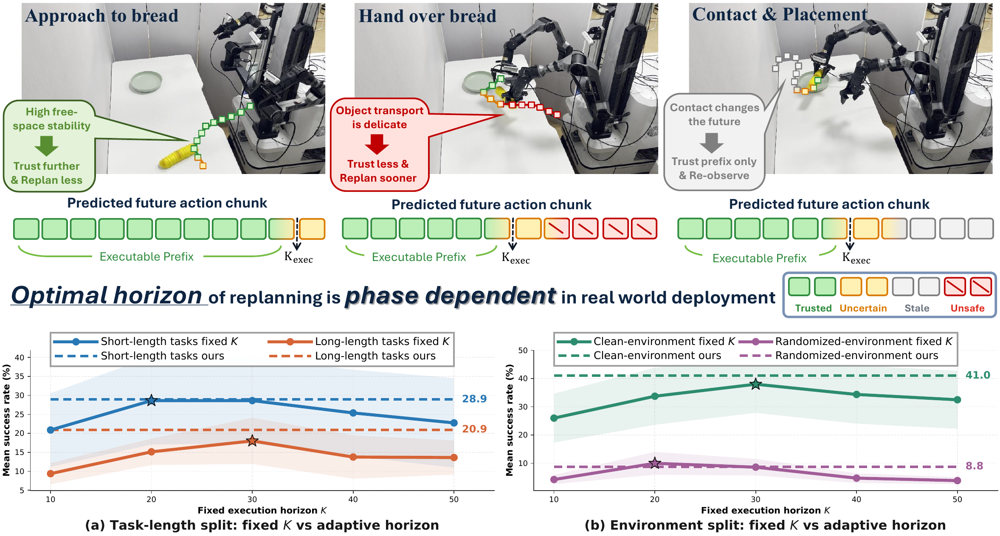
Action-Expert Evidence
Two complementary signals decide how far to execute.
Intra-chunk spectral stability
Fourier analysis of the denoising velocity trace estimates whether a candidate prefix remains smooth inside the generated chunk.
Inter-chunk continuity
Speed uniformity across the executed-history and predicted-prefix boundary penalizes horizon choices that introduce abrupt execution changes.
Phase-aware posterior
A kernel-forgotten Beta posterior tracks which horizons are reliable in the current manipulation phase instead of averaging over the full episode.
Rationality Check
The evidence tracks when longer chunks are trustworthy.
Metric-level analysis supports the intuition that reliable horizons vary by phase: short horizons are preferred around unstable contacts, while longer horizons become useful in smooth transport or post-contact motion.
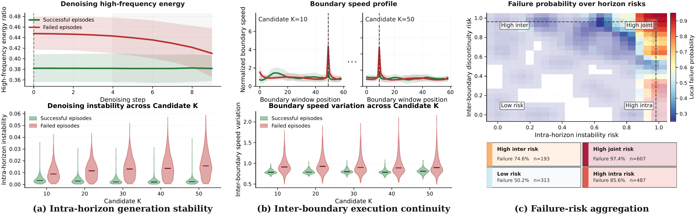
Method
AHS scores candidate horizons online. QHA amortizes the preference.
ChunkTrust evaluates how far each predicted action chunk should be trusted before replanning. The training-free Action-aware Horizon Selector scores candidate prefixes from intra-chunk spectral stability and inter-chunk continuity, then tracks phase-dependent reliability with an online posterior. The Query-based Horizon Adapter distills these preferences into a lightweight horizon prior that can be fused with fresh online evidence at deployment time.
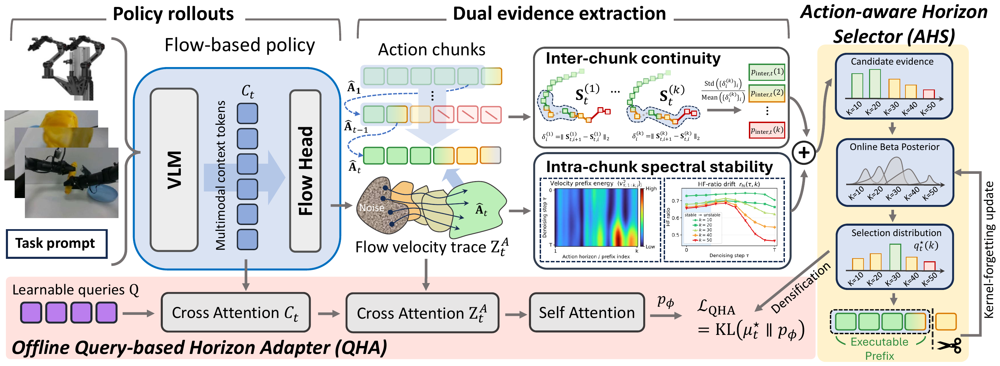
Results
AHS improves every evaluated simulated base policy.
Full per-task success rates are reported below for RoboTwin2.0 and RoboCasa GR1 Tabletop. Yellow cells indicate AHS, and blue cells indicate AHS+QHA.
Per-task success rates on RoboTwin2.0
| Task | pi0 | pi0 AHS | pi0 AHS+QHA | pi0.5 | pi0.5 AHS | pi0.5 AHS+QHA | Fast-WAM | Fast-WAM AHS | ||||||||
|---|---|---|---|---|---|---|---|---|---|---|---|---|---|---|---|---|
| Easy | Hard | Easy | Hard | Easy | Hard | Easy | Hard | Easy | Hard | Easy | Hard | Easy | Hard | Easy | Hard | |
| Blocks Ranking RGB | 19 | 0 | 28 +9 | 1 +1 | 31 +12 | 5 +5 | 36 | 20 | 48 +12 | 29 +9 | 56 +20 | 33 +13 | 99 | 98 | 100 +1 | 100 +2 |
| Handover Block | 41 | 10 | 41 +0 | 5 -5 | 64 +23 | 9 -1 | 44 | 14 | 44 +0 | 14 +0 | 32 -12 | 10 -4 | 94 | 81 | 91 -3 | 82 +1 |
| Handover Mic | 100 | 2 | 100 +0 | 24 +22 | 100 +0 | 30 +28 | 98 | 64 | 100 +2 | 56 -8 | 98 +0 | 59 -5 | 100 | 99 | 100 +0 | 100 +1 |
| Hanging Mug | 17 | 3 | 14 -3 | 9 +6 | 23 +6 | 10 +7 | 14 | 8 | 13 -1 | 12 +4 | 13 -1 | 14 +6 | 66 | 64 | 71 +5 | 69 +5 |
| Place A2B Left | 24 | 1 | 34 +10 | 0 -1 | 39 +15 | 1 +0 | 41 | 4 | 47 +6 | 4 +0 | 47 +6 | 15 +11 | 95 | 95 | 93 -2 | 93 -2 |
| Place Bread Basket | 11 | 8 | 18 +7 | 16 +8 | 15 +4 | 10 +2 | 30 | 17 | 50 +20 | 29 +12 | 55 +25 | 41 +24 | 91 | 91 | 93 +2 | 94 +3 |
| Place Bread Skillet | 15 | 2 | 23 +8 | 5 +3 | 23 +8 | 2 +0 | 24 | 10 | 36 +12 | 19 +9 | 44 +20 | 19 +9 | 91 | 91 | 94 +3 | 94 +3 |
| Place Can Basket | 33 | 5 | 22 -11 | 2 -3 | 33 +0 | 3 -2 | 35 | 15 | 50 +15 | 29 +14 | 55.2 +20.2 | 34 +19 | 71 | 63 | 69 -2 | 67 +4 |
| Average | 32.5 | 3.9 | 35.0 +2.5 | 7.8 +3.9 | 41.0 +8.5 | 8.8 +4.9 | 40.2 | 19.0 | 48.5 +8.3 | 24.0 +5.0 | 50.0 +9.8 | 28.1 +9.1 | 88.4 | 85.2 | 88.9 +0.5 | 87.4 +2.1 |
| Overall | 18.2 | 21.4 +3.2 | 24.9 +6.7 | 29.6 | 36.2 +6.6 | 39.1 +9.5 | 86.8 | 88.1 +1.3 | ||||||||
Full per-task success rates on RoboCasa GR1 Tabletop
| Task | QwenFAST + Qwen3VL | QwenPI + Qwen3VL | N1.5 | N1.5 AHS | N1.6 | N1.6 AHS | Qwen3GR00T + Qwen3VL | Qwen3GR00T AHS |
|---|---|---|---|---|---|---|---|---|
| PnPBottleToCabinetClose | 38.0 | 26.0 | 64.0 | 68.0 +4.0 | 51.5 | 54.0 +2.5 | 46.0 | 64.0 +18.0 |
| PnPCanToDrawerClose | 44.0 | 62.0 | 18.0 | 12.0 -6.0 | 13.0 | 12.0 -1.0 | 80.0 | 80.0 +0.0 |
| PnPCupToDrawerClose | 56.0 | 42.0 | 12.0 | 4.0 -8.0 | 8.5 | 14.0 +5.5 | 54.0 | 52.0 -2.0 |
| PnPMilkToMicrowaveClose | 44.0 | 50.0 | 38.0 | 34.0 -4.0 | 14.0 | 20.0 +6.0 | 48.0 | 42.0 -6.0 |
| PnPPotatoToMicrowaveClose | 14.0 | 42.0 | 54.0 | 36.0 -18.0 | 41.5 | 50.0 +8.5 | 28.0 | 28.0 +0.0 |
| PnPWineToCabinetClose | 14.0 | 32.0 | 16.0 | 20.0 +4.0 | 16.5 | 24.0 +7.5 | 46.0 | 52.0 +6.0 |
| PnPNovelFromCuttingboardToBasket | 54.0 | 40.0 | 50.0 | 52.0 +2.0 | 58.0 | 54.0 -4.0 | 48.0 | 70.0 +22.0 |
| PnPNovelFromCuttingboardToCardboardbox | 42.0 | 46.0 | 36.0 | 34.0 -2.0 | 46.5 | 46.0 -0.5 | 40.0 | 54.0 +14.0 |
| PnPNovelFromCuttingboardToPan | 58.0 | 60.0 | 68.0 | 64.0 -4.0 | 68.5 | 80.0 +11.5 | 68.0 | 80.0 +12.0 |
| PnPNovelFromCuttingboardToPot | 58.0 | 40.0 | 34.0 | 56.0 +22.0 | 65.0 | 64.0 -1.0 | 52.0 | 76.0 +24.0 |
| PnPNovelFromCuttingboardToTieredbasket | 40.0 | 44.0 | 46.0 | 32.0 -14.0 | 46.5 | 54.0 +7.5 | 56.0 | 44.0 -12.0 |
| PnPNovelFromPlacematToBasket | 36.0 | 44.0 | 50.0 | 46.0 -4.0 | 58.5 | 48.0 -10.5 | 42.0 | 54.0 +12.0 |
| PnPNovelFromPlacematToBowl | 38.0 | 52.0 | 50.0 | 62.0 +12.0 | 57.5 | 60.0 +2.5 | 44.0 | 66.0 +22.0 |
| PnPNovelFromPlacematToPlate | 42.0 | 50.0 | 62.0 | 66.0 +4.0 | 63.0 | 82.0 +19.0 | 48.0 | 72.0 +24.0 |
| PnPNovelFromPlacematToTieredshelf | 18.0 | 28.0 | 14.0 | 26.0 +12.0 | 28.5 | 36.0 +7.5 | 18.0 | 20.0 +2.0 |
| PnPNovelFromPlateToBowl | 52.0 | 52.0 | 58.0 | 58.0 +0.0 | 57.0 | 58.0 +1.0 | 60.0 | 60.0 +0.0 |
| PnPNovelFromPlateToCardboardbox | 30.0 | 40.0 | 40.0 | 48.0 +8.0 | 43.5 | 58.0 +14.5 | 50.0 | 54.0 +4.0 |
| PnPNovelFromPlateToPan | 48.0 | 36.0 | 44.0 | 48.0 +4.0 | 51.0 | 68.0 +17.0 | 54.0 | 54.0 +0.0 |
| PnPNovelFromPlateToPlate | 50.0 | 48.0 | 66.0 | 74.0 +8.0 | 78.7 | 82.0 +3.3 | 70.0 | 74.0 +4.0 |
| PnPNovelFromTrayToCardboardbox | 28.0 | 34.0 | 44.0 | 52.0 +8.0 | 51.5 | 48.0 -3.5 | 38.0 | 56.0 +18.0 |
| PnPNovelFromTrayToPlate | 34.0 | 64.0 | 50.0 | 60.0 +10.0 | 71.0 | 68.0 -3.0 | 56.0 | 62.0 +6.0 |
| PnPNovelFromTrayToPot | 46.0 | 44.0 | 46.0 | 50.0 +4.0 | 64.5 | 64.0 -0.5 | 50.0 | 66.0 +16.0 |
| PnPNovelFromTrayToTieredbasket | 36.0 | 50.0 | 44.0 | 38.0 -6.0 | 57.0 | 56.0 -1.0 | 36.0 | 56.0 +20.0 |
| PnPNovelFromTrayToTieredshelf | 16.0 | 28.0 | 34.0 | 38.0 +4.0 | 31.5 | 34.0 +2.5 | 16.0 | 44.0 +28.0 |
| Average | 39.0 | 43.9 | 43.3 | 44.9 +1.7 | 47.6 | 51.4 +3.8 | 47.8 | 57.5 +9.7 |
Real Robot
AgileX COBOT Magic rollouts under clean and randomized settings.
We use pi0.5 as the policy, trained on clean real-robot demonstrations.
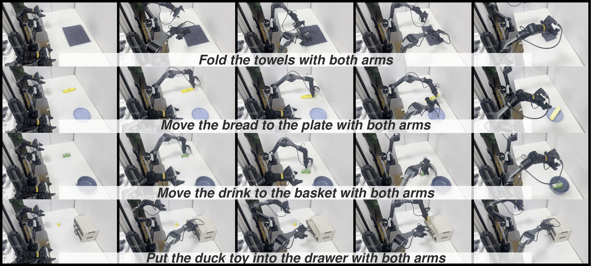
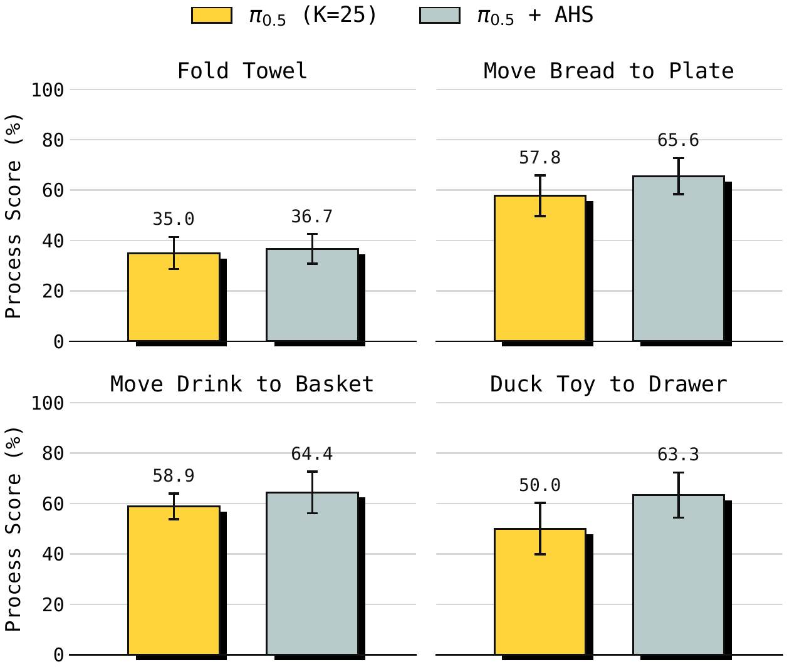
Case Study
Adaptive horizons follow manipulation phases.
AHS selects shorter horizons around grasping and transport corrections, then commits longer prefixes once motion becomes stable after contact.
Task prompt: use the left arm to grasp the red block on the table, handover it to the right arm and place it on the blue pad
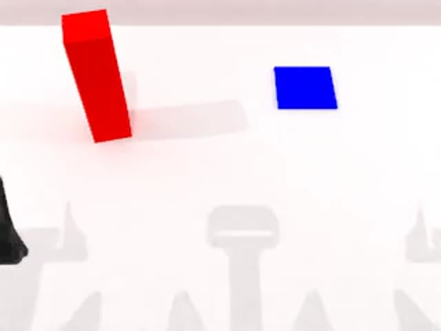
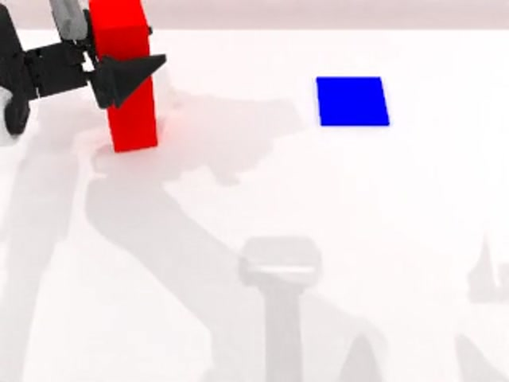
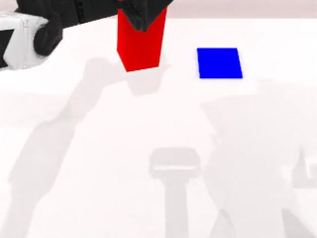
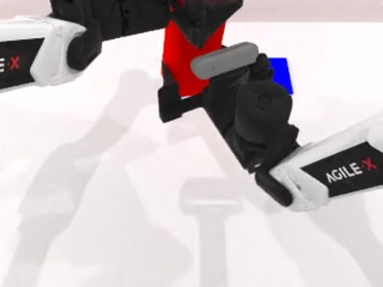
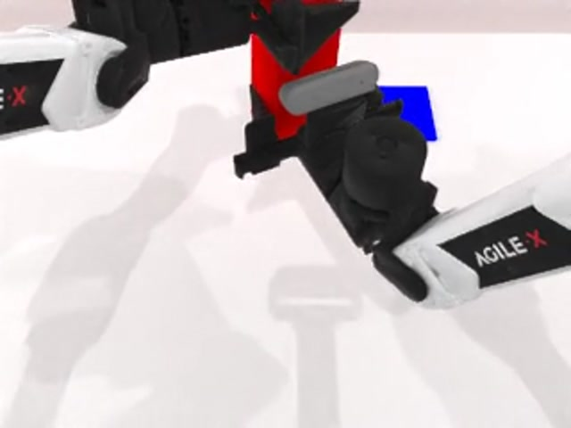
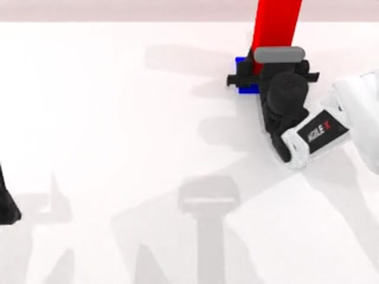
Phase 1
Step 0
The policy prepares to grasp the red block with the left arm
Selected horizon
K=41
0
309
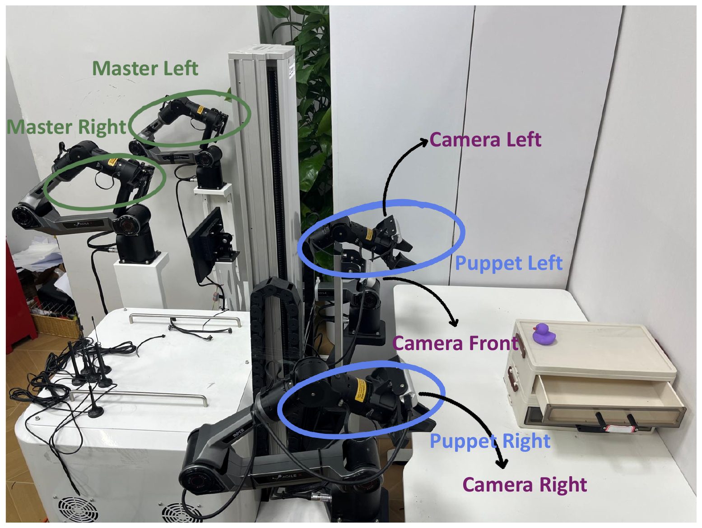
Implementation
Drop-in horizon selection for existing evaluation loops.
AHS runs as an evaluation-time wrapper around existing policy rollouts. It observes the policy's action trace and recent execution history, scores candidate prefixes, and returns the next horizon without changing the policy weights.
Citation
BibTeX
@misc{chunktrust2026,
title = {ChunkTrust},
author = {Anonymous Authors},
year = {2026}
}